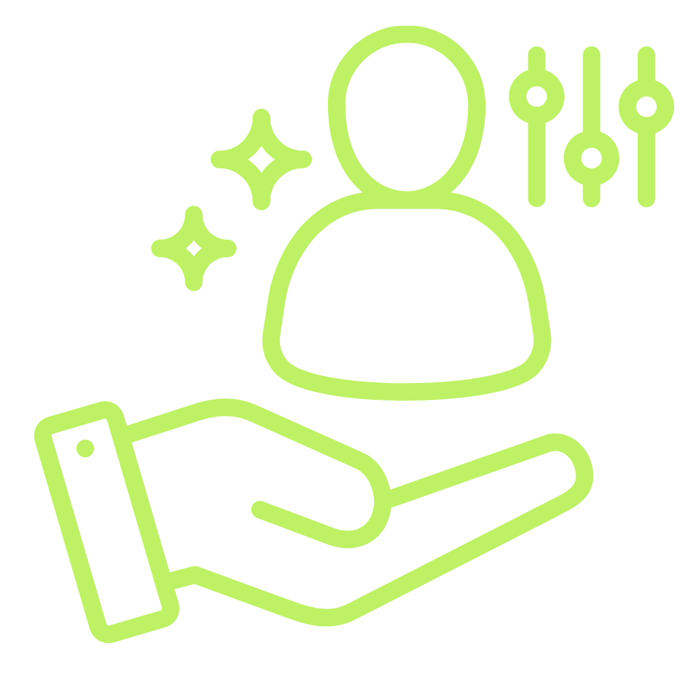
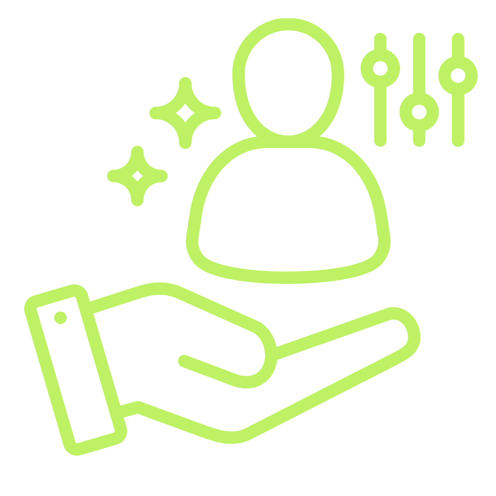

Apa itu Sehat.In?
Sehat.In adalah platform edukasi dan program gaya hidup sehat yang bantu kamu lebih aktif, makan lebih bener, dan hidup lebih seimbang. Misi kami simpel bikin hidup sehat jadi lebih mudah, lebih masuk akal, dan lebih sesuai sama aktifitas harianmu. Kami hadir buat nemenin kamu pelan-pelan bangun kebiasaan sehat yang lebih gampang dijalanin sesuai aktifitasmu. Yuk mulai perjalanan sehat kamu bareng Sehat.In, satu langkah kecil bermanfaat setiap hari.